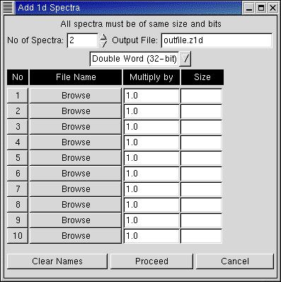
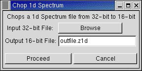
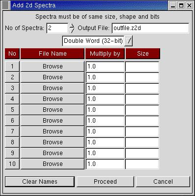

This menu provides many useful file manipulation facilities. Note that all these functions are executed independently on files without any reference to the settings in Setup. Invoking these functions is equivalent to running a program outside LAMPS.
Add 1d Spectra:

All the spectra to be added must be of the same resolution and Word Size. One can add a maximum of 10 files together. Each spectrum can be scaled by a factor. Since the scale factor can also be negative, Add Spectra can also subtract spectra. In fact it can even be used to scale just one spectra.
After deciding upon the number of spectra to be added and the output file name (the file will be created in the directory from LAMPS was started), the word size (Double/Single Word) must be chosen. The files can be selected by clicking on "Browse". LAMPS then displays the number of channels of data in the file in the "Size" column. One should ensure that the file sizes are identical before proceeding. Note that LAMPS cannot determine if a file is 16-bit (Single Word) or 32-bit (Double Word). This setting must be correctly supplied by the user. When in doubt, display the spectrum under both the assumptions and determine the correct setting.
While subtracting spectra, it is important to note that if any resulting value is negative it will be set to zero. If this is not realised, it may be surprising to find that the area of a certain part of the subtracted spectrum is not what one would expect!
Chop 1d Spectrum:

This interface allows a 32-bit spectrum to be converted into a 16-bit spectrum. If data at any channel is >65535 it will "roll over" (65536 will be 0, 65537 will be 1, etc.)
Compress 1d Spec: Allows the resolution of a spectrum to be reduced. e.g. a 8192-channel 1d spectrum can be converted to a 2048-channel spectrum (by adding 4 consecutive channels at a time).
1d Spec to ASCII: A 1d spectrum (binary file) is converted to ASCII. This may be useful for a printout or to be read by other plotting programs etc.
Add 2d Spectra:

The operation of this interface is simlar to that described for 1d-spectra above.
Chop 2d Spectrum:
Similar to Chop 1d Spectrum described above
Compress 2d Spec: Allows the resolution of a 2d spectrum to be reduced. e.g. a 1024 x 512 spectrum can be converted to 512 x 128.